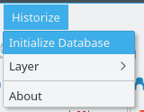
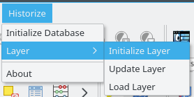
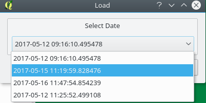
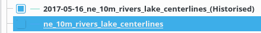
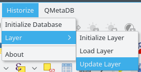
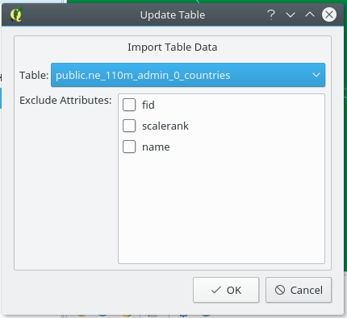

Historize Plugin
Author: William Habelt
Version: 1.0
The Historize Plugin was developed in order to offer a simple solution to keeping track of layers and their edits.
Table of Contents
- Prerequisites
- Menu behaviour
- Initialize Database
- Initialize Layer
- Load Layer
- Update Layer
Prerequisites
In order for the historisation process to work correctly following conditions must be met:
- You must have at least one PostGIS layer in your project
- The PostGIS database may not have a schema by the name of 'hist_tabs'. This name is used by the plugin.
The following instructions assume these conditions are met. If you still
encounter problems please submit a ticket to
https://github.com/HabeltWi/Historize/issues
Menu behaviour
In order to reduce the likelyhood of invalid inputs and by extension errors, the Historize plugin will
automatically determine which menu-options are available whenever you select a layer from the Map Registry.
If an option is unselectable you must first make sure you have selected a valid layer from the Map Registry
(as per the prerequisites as mentioned previously). It is also not intended that multiple layers be
selected so if you choose to do so anyway the plugin might not function as intended. Do so at your own risk.
If you reload the plugin you will have to reselect your layer as well. This is because the menu-options update
themselves whenever a layer is selected in the Map Registry.
Initialize Database

This function sets up the historisation framework on the database. This is the first thing you should do when starting out.
- Select a layer of the database you wish to initialize from the Map Registry.
- Click 'Initialize Database'.
- When prompted whether you wish to proceed click 'OK'.
The plugin will then run the SQL Commands found in the file 'historisierung.sql'
(.qgis2/python/plugins/Historize/sql/historisierung.sql). When the process is done
you will be notified. To make extra sure that the process worked, open PG-Admin
and confirm that the 'hist_tabs' schema has been created in the database.
Initialize Layer

Once the database has been initialized you may now begin with the historization of your map layers.
- Select a layer you wish to initialize from the Map Registry.
- Click 'Initialize Layer'.
A message box will inform you of the plugins success or failure. Remember: The selected
layer must be a part of the database where the historisation framework was already initialized.
Load Layer

As you edit your historized layers, the changes are recorded and saved automatically
through triggers. If you open the database you will be able to see exactly when
something was changed and by whom. The fascinating part however is to load a view of
an earlier timestamp and to see how things have changed.
- Select the layer whose timestamp you wish to load from the Map Registry.
- Click 'Load Layer'.
- Select the desired date from the menu

- Click 'OK'
The timestamp of the layer will then be loaded to the Map Registry. The name is lead by
the selected date and ends with the bracketed tag '(Historized)'. You may load as many
copies of the same timestamp if you wish or any number of different ones. Just be careful
not to lose track of them.

Update Layer

While working with a layer there may be a large import of data you wish to add. This
function aims to allow you to do just that. The requirement for this however is that
the target and import tables must share the same structure. In order to guarantee this
you may choose to exclude certain fields.
- Select the target layer to which you want to import the data from the Map Registry.
- Click 'Update Layer'.
- Select the layer from which to import the information from the dropdown.
- Check the attributes of the target layer to exclude from the list.'

- Click 'OK'
The import will then proceed and inform you of it's success when it is done. !IMPORTANT!: As
of this version this function is not yet properly implemented! Errors are to be expected!